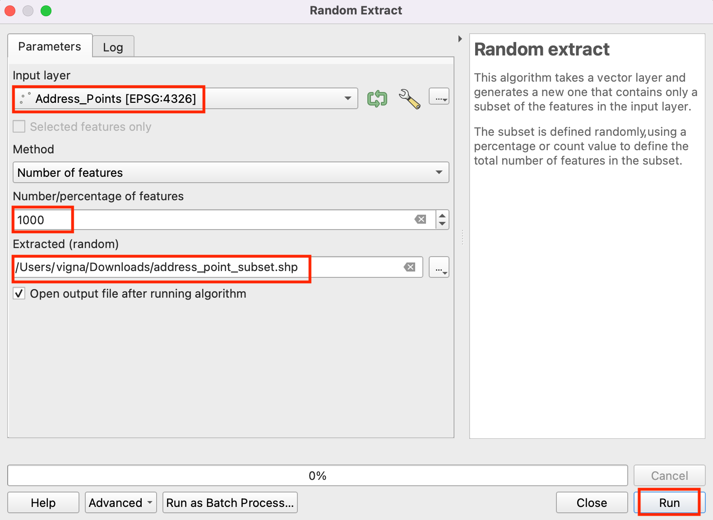
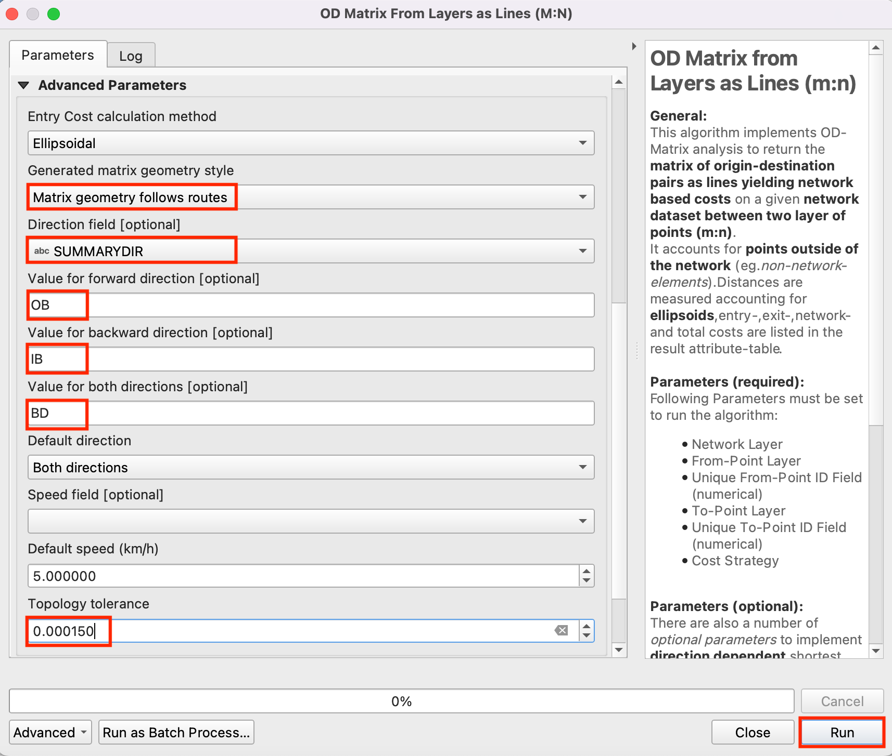

Localizando la Instalación Más Cercana con Matriz Origen-Destino (QGIS3)¶
En el tutorial previo, Visualización y Enrutamiento Básico de Red (QGIS3), aprendimos como construir una red y calcular la ruta más corta entre 2 puntos. Podemos aplicar esa técnica para varios tipos diferentes de análisis basado en red. Una de esas aplicaciones es el cálculo Matriz Origen-Destino o Matriz OD. Dado un conjunto de puntos de origen y otro conjunto de puntos destino, podemos calcular la ruta más corta entre cada par de origen-destino y averiguar la distancia/tiempo de viaje entre ellos. Tal análisis es útil para ubicar la instalación más cercana a un punto dado. Por ejemplo, la empresa de logística puede usar este análisis para encontrar el almacen más cercano a sus clientes para optimizar las rutas de entrega. Aquí usaremos el algoritmo Matriz de Distancia del complemento QGIS Network Analysis Toolbox (QNEAT3) para encontrar la instalación de salud más cercana a cada dirección en la ciudad.
Nota
Este tutorial muestra como usar tus propios datos de red para calcular una matriz origen-destino. Si no tienes tus propios datos de red, puedes usar Complemento ORS Tools y el algoritmo para hacer el análisis similar usando datos OpenStreetMap. Vea Análisis de Área de Servicio usando Openrouteservice (QGIS3) para aprender como usar el complemento ORS Tools.
Vista general de la tarea¶
Tomaremos 2 capas para Washington DC - una con puntos que representan direcciones y otra con puntos que representan instalaciones de salud mental - y averiguaremos la instalación con la menor distancia de viaje para cada dirección.
Otras habilidades que aprenderá¶
Extraer una muestra aleatoria de una capa punto.
Usar Capas Virtuales para ejecutar una consulta SQL en una capa QGIS.
Obtener los datos¶
El gobierno del Distrito de Columbia comparte libremente cientos de conjuntos de datos en el Catálogo de Datos Abiertos.
Descargue las siguientes capas de datos como archivos shape.
Para su comodidad, puede descargar directamente una copia de los conjuntos de datos de los enlaces abajo:
Proveedor de Servicios Comunitarios.zip
Fuente de Datos: [DCOPENDATA]
Configuración¶
Visite . Seleccione :guilabel:` Todos` Busque el complemento QNEAT3 e instálelo. Clic en Cerrar.
Procedimiento¶
Localice el archivo
Community_Based_Service_Providers.zip, expándalo y añadaCommunity_Based_Service_Providers.shpal lienzo. Seleccionaremos sólo los centros que prestan servicios a adultos. Haga clic con el botón derecho en la capaCommunity_Based_Service_Providers.shpy seleccione Filtro.

Se abrirá un cuadro de diálogo :guilabel: Constructor de consultas. Introduzca la siguiente consulta en Expresión de filtro Haga clic en Ejecutar.
"PROVIDER_T" IN ('Adult','Adult & Child')
A continuación, localiza el archivo
Roadway_Block.zip, expándelo y añade el archivoRoadway_Block.shp. Del mismo modo, localiza el archivoAddress_Points.zip, expándelo y añade el archivoAddress_Points.shp. Verás un montón de puntos alrededor de la ciudad. Cada punto representa una dirección válida. Seleccionaremos 1000 puntos al azar. Esta técnica se llama muestreo aleatorio. Vaya a :menuselección:`Procesos --> Caja de herramientas`.

Busque y localice el algoritmo
Seleccione
Address_Pointscomo la Capa de Entrada,Number of featurecomo el Método e, ingrese1000en Número/porcentaje de objetos espaciales. En el Extraído (aleatorio) elija el...y clic Guardar a un archivo. Ahora elija el directorio e ingrese el nombreaddress_point_subset.shpy clic Ejecutar.

Nota
Como el algoritmo extraerá 1000 puntos aleatorios del conjunto de datos dado, para replicar los puntos exactos usados en este ejercicio puede descargar el archivo de subconjunto que obtuvimos durante la ejecución del algoritmo aquí address_point_subset.zip. Después de descargar, cargue la capa address_point_subset.shp en QGIS.
Se añadirá una nueva capa
address_point_subsetal panel Capas, puede desactivar la visibilidad de la capa de puntos de direcciónAddress_Points. Vamos a renombrar esta capa comoorigin_points. Haga clic con el botón derecho en la capaaddress_point_subsety seleccione Renombrar capa.

Del mismo modo, cambie el nombre de las capas
Community_Based_Service_Providerque representan los centros sanitarios pordestination_points. Esta forma de nombrar las capas facilita su identificación en el procesamiento posterior. A continuación, abriremos la caja de herramientas de procesamiento para crear la matriz de distancias utilizando las capas de origen y destino.

Localice el algoritmo . Si no ve este algoritmo en la caja de herramientas, asegúrese que tiene instalado el complemento QNEAT3.

Este algoritmo ayuda a encontrar las distancias junto con la red entre las capas de origen y destino seleccionadas. Seleccione
Roadway_Blockcomo Capa de red. Seleccioneorigin_pointscomo :guilabel: Capa de puntos de origen yOBJECTIDcomo Campo de ID de punto único. Del mismo modo, establezcapuntos_destinocomo la capa Hacia-Puntos yOBJECTIDcomo el campo Identificador de punto único. Establezca Criterio de optimización comoSendero más corto (optimización de la distancia).

Dado que muchas calles de la red son de sentido único, es necesario establecer los Parámetros avanzados para especificar la dirección. Véase Visualización y Enrutamiento Básico de Red (QGIS3) para más detalles sobre cómo se estructuran estos atributos. También tenemos una opción para seleccionar el estilo de geometría de la matriz generada. Tenemos una red de carreteras con información de dirección, por lo que podemos generar la matriz siguiendo la ruta. Elija
Matrix geometry follows routes. ElijaSUMMARYDIRcomo Campo de dirección. IntroduzcaOBcomo Valor para la dirección hacia delante,IBcomo Valor para la dirección hacia atrás, yBDcomo Valor para la dirección hacia ambos lados. Establezca Tolerancia topológica como0.0000150. Mantenga las demás opciones en sus valores por defecto y haga clic en :guilabel: Ejecutar.

Se añadirá una nueva capa de tabla llamada
Output OD Matrixal panel Capas. Haga clic con el botón derecho y seleccione Abrir tabla de atributos. Verá que la tabla contiene 67000 filas. Teníamos 67 puntos de origen y 1000 puntos de destino - por lo que la salida contiene 67x1000 = 67000 pares de orígenes y destinos. La columnatotal_costcontiene la distancia en metros entre cada punto de origen y cada punto de destino.

Para este tutorial, sólo nos interesa el punto de destino con la distancia más corta. Podemos crear una consulta SQL para elegir el destino con el menor
total_costentre todos los destinos. Vaya a .Busque y localice la opción .

En :guilabel: Fuentes de datos de entrada adicionales seleccione
...y marque la opción :guilabel: Matriz OD de salida y haga clic en :guilabel: Aceptar. Ahora haga clic en Summation bajo :guilabel: Consulta SQL. Introduzca la siguiente consulta en el cuadro de diálogo Consulta SQL. Introduzcageometrycomo campo Geometría y seleccioneLineStringcomo tipo de :guilabel: Geometría. Haga clic en Ejecutar.
select origin_id, destination_id, min(total_cost) as shortest_distance, geometry from input1 group by origin_id
Se añadirá una nueva capa virtual
SQL Outputal panel :guilabel: Capas. Esta capa contiene el resultado de nuestro análisis. Proveedor de servicios más cercano para cada uno de los 1000 puntos de origen.

If you want to give feedback or share your experience with this tutorial, please comment below. (requires GitHub account)